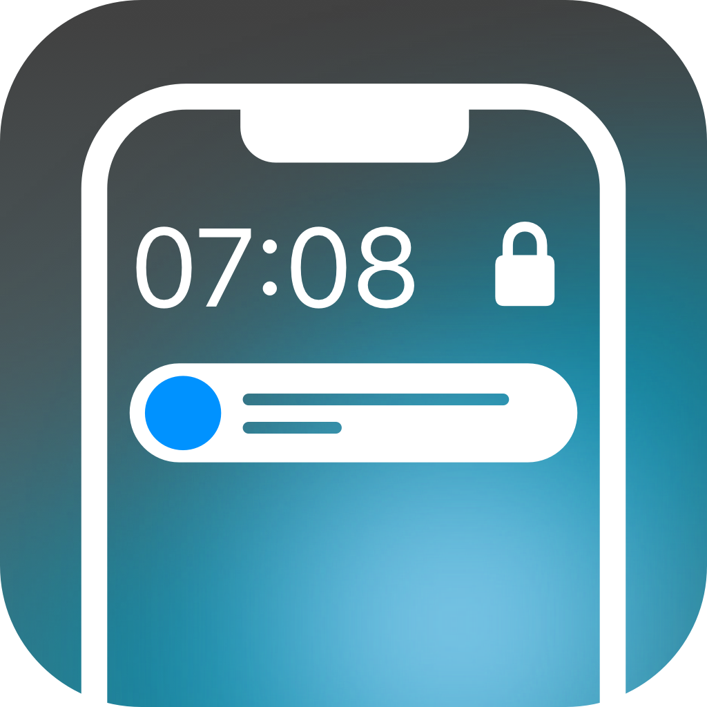

AVAILABLE · 2.7.103
Quart17
Quart17 为越狱设备提供可定制的锁屏音乐播放器、专辑封面、通知排版与缩放，以及下拉清理手势。
Quart17 brings a customizable Lock Screen music player, album artwork, notification layouts and scaling, and pull-to-clear gestures to jailbroken devices.
功能介绍与完整更新记录 / Features & changelog →